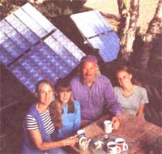
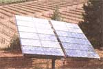
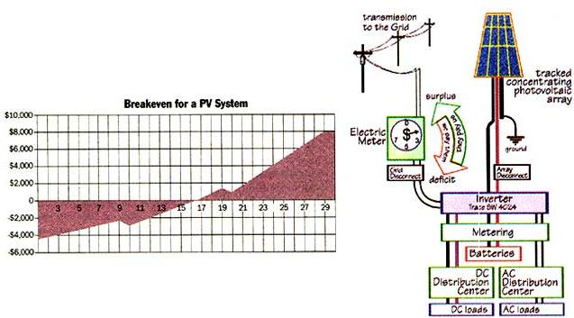
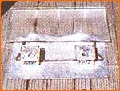
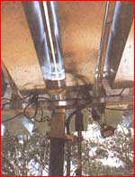
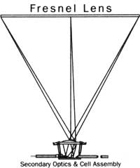
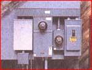

ENERGY AND ENVIRONMENT
A Quiet Revolution in Photovoltaic Power Has Made the Dream of Renewable Energy a Reality.
John Schaeffer, president of Real Goods of Ukiah, CA, and his wife
Nancy have just taken a great leap towards electrical independence
by installing one of the first utility-tied PV systems featuring new,
high efficiency Midway Labs modules. Midway's story.
Perhaps no other endeavor has captivated the 0minds of MOTHER readers as much as living independently, free of the indentured servitude of the electrical grid. For nearly half a century, the photovoltaic cell, generating DC power solely from the rays of the sun, has represented one of the best avenues to that independence. At long last, developments in those renewable energy systems have made it easier for us to live within our solar income while maintaining our quality of life ...and without first obtaining a degree in electrical engineering. As appliance energy-efficiency continues to improve, better appliances made more easily available to energy-conscious buyers, and new equipment for managing homegrown energy (and selling the excess to the local power company) finally taking the intimidating learning curve out of system installation, the dream of decentralized generation is now. Off-the-gridders are being joined by nations and municipalities in declaring this to be the year renewable energy becomes the people's power choice.
Can a home PV system, designed to be integrated into and complement your existing grid power (see diagram at right), ever pay for itself? Yes, if the utilities agree to pay you for the excess power you produce at the same rate that they charge you for their own power. The chart assumes modest to moderate initial system cost of $6,000, a kilowatt-hour cost of 13 cents in the first year, and a conservative annual increase of 5 percent thereafter. For example, a kilowatt-hour of electricity in 2025, the endpoint of my projection, would cost 54.3 cents. Batteries for the system will need to be replaced every 10 years at a cost of about $1,000, and results in the saw-tooths in the break-even line.
Only a tiny fraction of a percent of American homes-just over a hundred thousand-are off the electrical grid and renewably self-sufficient, but that trend is quickly changing. Programs designed to defrock the electric priesthood by demystifying electricity, once attended only by supposed environmental radicals, are now filled to near capacity by tens of thousands nationwide, who quickly learn how safe, simple, and rewarding it is to play productively in the energy game. At the same time, the stakes have never been higher: Electric rates poise on an uncertain brink, and no one predicts that they will ever fall again. The power brokers in this game of redefining our national energy resources will still be the utilities, but they will have to transcend their role as primary providers and eventually come to terms with the fact that power has to flow from where it is most naturally derived: from our south facing roofs, seasonal streams, and windy promontories where it is still free for the taking.
New Power Sources
While awaiting a dramatic breakthrough in power-source technology, energy hobbyists and others who produce their own power have been happy to see incremental improvements in electrical source technology-smaller, quieter, affordable wind turbines, refined micro-hydro, and enhanced photovoltaic (PV) systems appearing in the past few months. Stepwise refinements in PV efficiency, yield, and packaging have decreased electrical cost per watt of installed systems-generation, control, and storage-by about a dollar from over five dollars a watt in 1993 to four dollars and change today. Systems that might produce a kilowatt-hour of electricity for 32 cents in 1992 may now produce a kilowatt-hour for less than 30 cents. Federal neglect for renewable energy programs continues to be, according to insiders, the secret strength of the alternative energy industry. Proudly unsubsidized, we get where we're going under our own power. Changes in PVs include minor tuning of module frames, larger cell size (up to six inches from four inches circa 1990), utilization of more of each cell, new collection strategies (vertical traces in laser-etched channels reduce the amount of cell shaded by the trace), and better antireflective coatings. Silicon, a material mastered because of transistor technology, remains the best material for large-scale development, and current technology approaches the practical limitation of that material's capabilities. Silicon cells are very good right now.
Current improvement efforts focus more on the way light gets to the cells than on improving photo-cells themselves. Higher efficiency cells can be made, but the cost of making them appears to be irreducible, so the challenge is to make these cells work harder. By using fresnel lenses and mirrors to concentrate sunlight as much as three hundredfold onto small, highly efficient photovoltaic cells, manufacturers have just begun entering the marketplace with concentrating modules which promise a breakthrough in yields, but do add to system complexity. Concentrators must be pointed squarely at the sun to within a degree or two to accomplish their light amplification, which pushes cutting-edge tracker technology to its limit. Since conventional flat-plane one-sun modules have encountered problems in their adhesives, coverings, and substrates when subjected to the stresses of collecting sunlight over a prolonged period extending to a half century, we can imagine how these problems will be compounded by several-hundred-sun modules whose cells absorb light and heat intensified by two orders of magnitude. Since production concentrator modules have yet to see a year in the field, pioneers who are installing these devices can only hope the problems have been well solved (see accompanying sidebar).
In Europe and Asia, a different strategy is being employed. In Germany, glass roofs and south-facing curtain walls of new buildings are now covered with photo-active materials. In Japan, low efficiency roofing tiles are making building tops into power farms. Swiss schools are graced with fanciful sculptures of PVs to introduce children to the inevitability of renewably harvested electricity. Observers of the global energy scene worry that America's fossil-fuel-only policies are hurtling us toward an inevitable wall.
For those wishing to generate some or all of their own electrical power, an additional source of real excitement this year centers around new controller-inverters (which change solar panel-generated 12 or 24 volt DC power into 120 volt AC household current) that make it possible to plug alternative energy sources directly into the grid and get paid for our production. Grid-intertie technology has been available but pricey for at least a decade, but until recently has not offered a satisfying solution for a small, self-powered home system. As MOTHER first reported in our December/January 1994 issue [#141], however, industry leader Trace was set to introduced their SW 4024 inverter, a four-kilowatt 24-volt device perfectly suited to home energy co-generation that promised to revolutionize the field. Performance of the unit in its debut year has lived up to expectations. Controlled by a microprocessor, the 4024 has shown itself capable of choreographing all the entities in a complex hybrid power management scheme, from PV arrays, wind and micro-hydro generators through battery charging to control of a backup fossil fuel-fired generator to keep the system alive. These units incorporate all the controls we need to be our own utility, allowing small independent power producers (IPPs) to actually pump excess power back into the grid. Since most electric meters are simple electromechanical devices which turn whichever way the current flows, guerrilla power producers can simply install one of these units and spin electric meters backwards without the utility's knowledge. Because of real dangers to utility workers and the federal fines of up to $30,000 per incident, we do not recommend this course.
On the horizon: smaller and friendlier balance-of-system components, self-contained renewable power systems, photoactive shingles for new roofs, and even tiny on-board inverters that convert direct-current PV electricity into alternating house current so that modules can be directly connected to a home's wiring.
Some of the most exciting action has been precipitated by the easy availability of home-scale power management equipment. PURPA, the Carter-era law, requires utilities to buy privately generated electricity at "avoided cost." Some utilities, recognizing that the contribution is small and perfectly coincident with their peak load requirements, have adopted a generous "net metering" policy, whereby the IPP's meter spins in the utility's favor when the customer consumes electricity, and in the customer's favor during excess production. Revealing dinosaurian shortsightedness, most utilities require IPPs to provide two meters, buying kilowatts for a pittance and selling them next door for four times as much. Public utility regulators in several states, including Minnesota and Wisconsin, have ended the argument by mandating equal metering for small producers. Fairness probably falls somewhere between, as in the European models in which utilities pay about 85 percent of the retail rate to IPPs. This is a favorite issue of mine, and a great opportunity for exerting pressure on state regulators.
As massive large-scale generation projects become rarer and more problematic, equitable treatment for local small independent power producers will become more important in comprehensive utility planning. Conventional grid engineers like to point to "problems" of integrating many, small, independent producers, but others regard these as opportunities to reform and improve electrical service, which has declined in reliability in recent years.
This winter, along California's windy north coast, a series of storms felled hundreds of unhealthy exotic trees across Pacific Gas & Electric's aging and overextended power lines, plunging 100,000 customers into darkness for as long as six days. In 1980, such a prolonged outage was unthinkable, but during this "disaster," PG&E executives admitted that they and other large Utilities have reduced crews, laid off dedicated veteran linemen, and neglected maintenance for economic reasons. "Islanding," cited by the same engineers as the greatest danger of decentralized power generation, can be a problem during maintenance. In the classic islanding scenario, a small pocket of homes at the end of a branch line might remain energized during an outage affecting all their neighbors because one or more of them had IPP arrangements with the utility. The utilities must then be able to dispatch-turn on and off the contributions of small power producers the same way they dispatch their larger generation assets in order to bring local lines down for maintenance. But such a problem is not nearly as complex to remedy as the utilities would have us believe.
The grid, extending right down to the point where house current is delivered to the ratepayer's buss-bar and electric meter, is designed to follow the historical precedent in which all power comes from a few large, distant, point sources-nuclear, hydro, wind- and PV-farms, or fossil-fueled plants under the control of the utilities and their peers. Since electricity cheerfully flows from wherever it's in surplus to anywhere it's required, redesign of these systems to accommodate many smaller local sources is practically trivial, involving no changes to big-ticket infrastructure like power lines and transformers, only minor changes to utility switching equipment. Since utilities across the country already employ their own renewable systems to energizing sagging transmission lines, the technology is obviously available. In fact, simple technological measures can turn the "danger" of islanding into an opportunity for small isolated communities to be electrically self-sufficient during the inevitable grid failures which will become more common in the future. In my view, the grid, once it becomes a mechanism for moving power democratically between sustainable sources and those who need to light the darkness, will eventually be considered a treasure, not a liability, by our children, provided reforms to its structure are begun now.
Planning For Power
Batteries, the only cost-effective storage technology, continue to be the weakest link in stand-alone systems. Proponents of flooded lead-acid batteries, a technology nearly a century old and as common as the battery in your car, say that these units are more than adequate, providing efficient storage with only modest attention. Incremental improvements are doubtless possible, but since bulk energy storage is such a small part of the battery market, manufacturers are only now, with the promise of electric vehicles on the horizon, beginning research in improved energy density and deep-cycling longevity.
Even utilities, traditionally stolid and conservative champions of massive power schemes, are getting into the domestic scale act: In Sacramento, California, the Municipal Utility District's "Give Us Your Roofs" program continues to be oversubscribed by homeowners willing to pay more for sustain ably harvested electricity. Rather than extending power lines gracelessly across the landscape, Southern California Edison and other giant utilities are offering home power systems exactly like the ones that off-the-gridders have been installing for a decade.
Disasters in California, the upper Mississippi, Hawaii, and Florida have made many homeowners aware that it is nice to have enough electricity to pump a little water, listen to emergency bulletins on the radio, and see in the dark. At the same time, increased availability and simplicity of small-scale applications for remote water pumping, power for seasonal cabins and wireless communications, and other standalone electrical applications are thrusting photovoltaics into public awareness. By far the largest proportion of new solar cells manufactured each year go to power calculators and watches, but more off-the-grid swimming pool pumps and roommates, attic fans, garden fountains, pool aerators, cabin electrical systems, and roadside communications stations have been installed in the last t? months than in all previous years.
Conservation The Measure of Success
Controlling the energy we consume continues to be, for all of us, the single most productive way to making renewable energy a reality, and a necessary prerequisite for a stand-alone power co-generation or a grid-deprived remote community. In the face of an unprecedented housing crunch recently, huge and poorly designed retail outlets have gobbled up Juneau, Alaska's comfortable surplus of sustain ably generated hydroelectricity, forcing them to increase their awkward petroleum addiction. In Juneau and elsewhere across the country, citizens, ratepayers, and power company officials are wondering how long will it be before we learn that we must reduce waste before we try to reform production?
And the market is just beginning to respond in force. New appliances continue to perform better while consuming less and less energy, enlarging the Conservation Power Plant. If we follow our energy dollar, starting with our most outrageously wasteful habits, space heating and cooling, refrigeration, domestic hot water, and lighting, it becomes clear that at least half of the power consumed in the home is virtually wasted on inefficient appliances and technology. Opportunity for efficiency is abundant: Total consumption can consistently be reduced by at least that 50 percent mark in most American homes. Windows are commonly our most wasteful appliances; replacing antique single-pane glass with high efficiency windows reduces heating and cooling costs by 50 to 70 percent in almost every climatic regime. New windows are as much as eight times as resistant to heat loss as traditional glass.
When an appliance is shown to be as blatantly wasteful as the single-pane window, conscientious energy minders replace it. Even break-even analysis, a technique usually resorted to by apologists for petroleum and nuclear exploitation to explain why nothing should be done, shows that all costs of rewindowing can be paid back within an average of three years, with everything considered. Those who have rewindowed report unexpected rewards: Unusable space near large windows has been reclaimed, and depressing window coverings can be abandoned, improving day lighting and reducing cabin fever. They say that rooms feel bigger, quieter, more secure. Schemes for community rewindowing are being tested and perfected in Alaska, Pennsylvania, and elsewhere. Similarly, improved refrigerators; solar-assisted instantaneous water heating; halogen task lighting; and smaller, brighter compact fluorescent bulbs make conservation ever easier. Not only will the business of producing more efficient appliances ultimately help those very appliance manufacturers, but also utilities and consumers, as they begin to breathe easier, no longer under the gun of half-century-old technology.
Reinventing the Solar Panel
When the French scientist Edmund Becquerel discovered that mere sunlight falling on certain materials produced a steady flow of electricity, the American Revolution was about 50 years old. His quiet invention of photovoltaics (PV) drifted through academic halls, virtually unexperimented with, until the space program began to gather steam in the early 1950s, and the modern, silicon-based solar cell was born. That cell, composed of single crystal silicon and a supporting base of metal or composite with positive and negative terminals, has since enjoyed varying, though more substantial government and private research and development, but the basic design and that design's overall capabilities haven't really changed substantially. Manufacturers have managed to make cells and solar panels, collections of cells on a supporting surface, a bit more efficient-about two percent more with each decade-but never has the PV industry experienced the kind of breakthrough that demands headlines and turns the heads of those who already have an investment in conventional, "on the grid" power. This year may bring exactly that brand of change.
In just about the most unlikely place imaginable, the cold and wind of Chicago, Midway Labs and its seven employees announced in mid 1994 the design of the PowerSource, a solar collector which was not only less expensive than conventional panels to purchase and install, but promised a 20 percent increase in electrical output. After less than a year on the market, our research has shown that Midway has indeed managed to do what companies with a hundred times their research power couldn't: make more efficient PV available and affordable. But the revolutionary design that makes the system possible might well be part of an enduring problem for Midway down the road.
Where conventional panels try to maximize efficiency by encasing larger and/or more numerous cells per panel, Midway drastically sized down their cells to little more than one inch square and installed a series of magnifying glasses over each. The focal point of each cell is bombarded with light and heat energy equivalent to three hundred suns, and results in an impressive rate of efficiency-nearly 18 percent. That is to say, of the 710 watts of light energy striking the panel on a typically sunny day, you'll get 127 watts of electrical energy out of the panel. The best efficiency rate that conventional rigid panels have been able to muster to date is about 14 percent. Midway's four percent improvement achieved in one effort all the research and improvements in cell efficiency for the past 20 years. Yet as far reaching as the new collectors are, they are utterly dependent upon one piece of technology that conventional systems often do without: a mechanical way of finding the sun.
The Tracker's the Thing
Motorized sun trackers, instruments capable of aiming panels directly at the sun throughout the course of the day, are as old as solar cells themselves. Used with conventional panels, they can boost system output substantially and easily pay for their $1,000-$2,000 purchase price. Yet they are still merely an avenue of augmenting power . If you own conventional panels and your tracker breaks, your power output will gradually fall off, but continue nonetheless. PowerSource panels, however, must be aimed exactly at the sun's center to within one degree in order to achieve maximum output. If the tracker aims incorrectly by more than a few degrees, the system shuts down entirely, leaving your toast half-browned in the process. If your system is a stand-alone, meaning that you generate all your own power with no tie to the electrical grid, repairing that tracker before the stored energy in the battery bank runs out becomes something of the utmost importance.
Midway has tried to do an end run around this problem by including a tracker with systems that both they and their distributors sell. Thankfully, these Wattsun FS-III trackers have an impressive reputation for reliability, but they do add to system cost, partially negating Midway's efforts at price reduction. The bottom line varies according to the size of system purchased (generally, the bigger the system, the cheaper per watt), so we decided to go shopping for a very modest system capable of powering a remote cabin inhabited periodically. We saved nearly $1,000 by picking a 460 watt (4module) array of PowerSource modules and tracker at $2,859 (taxes not included) over a 450 watt (6-module) array of Siemens PC-4 conventional panels and the same tracker at $3,979 (taxes also not included). The system is not complete, however, until a storage bank of batteries, a DC to AC inverter, a power controller, and miscellaneous wiring are thrown in, adding about $2,500 to the price of both systems. A larger system (800-900 Watts) sufficient to power a family home that conscientiously watches its power consumption and runs propane for heat and refrigeration will cost approximately $3,000 more than both system prices listed above.
Does the Midway price savings offset the odd possibility of being left in the dark for a couple of days by a faulty tracker? Yes and no. As much as we'd like to believe otherwise, the process of installing your own electrical generating system is as much an expression of technological dependence as independence, right from the beginning. If you are the type of person who just wants to have a contractor come and set the whole .thing up while you admire from afar, depending upon a motor you know nothing about to move your panels is most definitely a perilous proposition. But getting hands dirty from the very beginning will reduce even serious problems to minor annoyances in the long run, and that is why most dealers want you to install systems yourself.
Though promised for a months, Midway has yet to publish a more coherent version of its installation instructions. The current version manages to do what few manuals can emulate, making the process of assembly read more complicated than it is. Instead, depend upon the dealers for technical support until Midway finishes typing. Many will actually provide a technical advisor for a modest fee. And fight off that first wave of discouragement when the pieces arrive; they really can be assembled by any careful person (see "Northern Exposure" [Feb/Mar 1994, # 142] for a description of soup-to-nuts system installation by a rank amateur). Take into account that trackers are typically ground based. Mounting them on the roof as you would stationary conventional panels is a possibility, but you'll probably end up penciling in a loss of about 200-300 square feet of backyard, as well as the trees that keep it shady. PowerSource modules are even more insistent upon avoiding shade than normal ones.
Lingering Questions
Ask anyone who has bought a new car in its first model year, and you'll have a key to our concerns and questions about the PowerSource modules. What quirks and unexpected surprises can we expect along the way? If everyday wear and tear on normal PV panels makes their usable life something in the neighborhood of 20 -30 years, what kind of life can we expect from a panel subject to such hugely increased temperatures and resulting stresses? If they break 10 years into operation, that initial price advantage is going to seem ...very Yugo-like.
Robert Hoffman, vice president for engineering at Midway, interrupted after the first two questions. "Testing is ongoing with both the individual components in the module and the entire module itself, but independent lab tests have given us a clean bill of health for a 20-plus-year life on module components. Any module though," he quickly added, "experiences some minute power output variation over the course of its life. Some actually increase output, but most drop by about a few percentage points over the course of their lifetime."
After taking apart one of the modules, the simplicity and functionality of its design bears Mr. Hoffman out. The heat extremes in the cell's "eye" do not seem to affect the overall temperature of the module or its aluminum casing substantially, so it should last as long as a conventional housing. The cells are a slightly more complicated matter, however. Each silicon cell has a metal structure and wires incorporated into it, but the silicon expands and contracts at different rates than the metal, and over time, this difference can crack the cells. Robert assures that the cells were put through particularly rigorous temperature tests. Thankfully, a lab's ability to simulate 20 years of temperature extremes is a lot more reliable than its ability to simulate 20 years of bike collisions and errant kickballs.
One last longevity question concerns Midway's price goals over time. Are they expecting to sell for less in 1997 than today?
Talk to almost any dealer and they'll tell you that the prices of silicon cells and their modules have been dropping by anywhere from 5 to 15 percent every year for the past five, and that they expect that decrease to continue. Hmmm. Let's see. At that rate, we should be paying nothing for solar panels by 2005. Unfortunately, their price-reduction mantra makes a interesting statement, but doesn't hold water. A quick trip back through price guides of years past indicates that if anything, prices for a great many industry-leading models have either held nearly rock solid or were subject to actual increases in the last five years. Admittedly, we're not taking inflation into consideration, but you get the point.
Our modest recommendation is that you stop holding your breath until those free-fall price drops arrive. We'll bet both module and whole system costs for conventional equipment will remain relatively stable over the next few years, though a slight reduction is a possibility. Whatever the outcome, if Midway continues to make a go of it, their price advantage should hold, perhaps until the turn of the century. Their one charley horse is the price of aluminum. Much more aluminum per module is used in Midway's construction than in conventional design, and if that particular metal starts to climb significantly in price, things could get dicey.
Mr. Hoffman was quick to point out that Midway is just beginning to gear up for production, and in no way expects his prices to hold where they are once the market begins to take notice. "You've got to remember that we are currently pricing based on an output of four or five modules a day. Once we really get going, we are gunning for a module and tracker cost of $2-3 per Watt in as few as three years," That's going to be a tough goal to meet, as their prices as of June were approximately twice that. Let's see. At that rate....
There's no joy like seeing your
second meter actually selling power back to the utilities.
Trumping the Utilities
On average, utilities charge $10 per foot to extend the electrical grid to new homes. Pockets will have to be even deeper if you want to bury your lines, an aesthetic option that typically increases costs by 10-20 percent. The lunacy of signing such a check when all you are paying for is a lifetime of bills is something MOTHER has been waging war against since 1970. Either a conventional or PowerSource system installation-take your pick-will have already paid for itself the moment it arrives at your remote home and begins operating. After that, never paying another utility bill will just be a permanent reason to smile when you get up in the morning.
But have we finally, at long last, reached the age when technological improvements, ease of installation, and affordability combine to make renewable energy practical for those already paying for their power'? Well, if the only consideration whatsoever is the bottom line-not yet. If you buy a Midway system today sufficient to power your home, install it tomorrow, and stop paying utility bills next month, you might pay for the system in 15 years. But one major fluctuation in grid power prices, one more embargo, and stand-alone solar systems will be a practical option overnight. And there's no need to wait even that long to enjoy the benefits of a small system designed to complement your grid power. For instance, extending your household grid to pump a distant well, stock tank, irrigation system, or to power an electric fence, gate, or perimeter lighting is an expensive proposition. It is better and more inexpensively done with a few modules. Keeping those critical appliances working, even in the midst of a neighborhood blackout, will make you grateful for the investment ...and sooner than you imagine.
-Matt Scanlon
Top
|
 A pair of Midway's new cells. |
 New Midway panels on an FS-III tracker |
 |
|
 |
 |
 |
|
 |
|
|